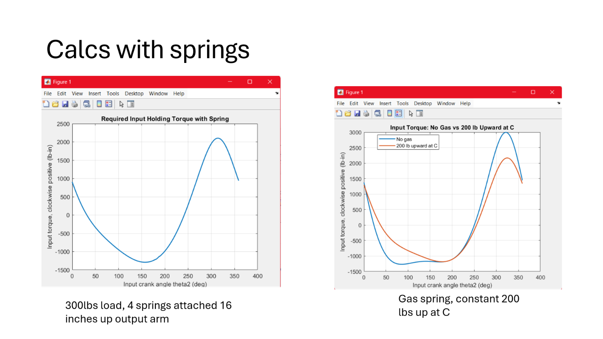
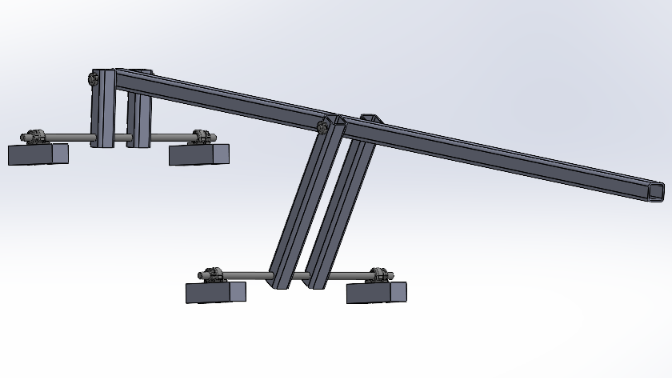

PROJECT 01
Rose Float Mechanism
Objectives
Design and fabricate a mechanism that produces a natural diving motion for a canadian goose for the 2027 Cal Poly Rose Float. Design should have a comfortable factor of safety for parade conditions and be simple enough for new students to assemble in lab.
Outcomes & Contributions
As mechanism lead, I designed the hydraulically powered linkage in SolidWorks, performed static hand calculations to verify my factor of safety, presented two PDRs proving my design to be feasible and safe, and managed a team of students manufacture and assemble the mechanism.
Technical Details & Skills
Mechanical design, SolidWorks, hydraulics, fabrication, machining, welding, and team leadership.